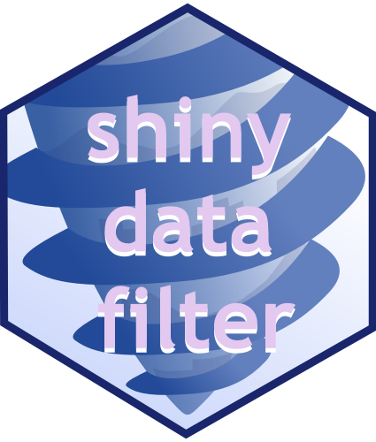

shinyDataFilter 
data-agnostic, shiny-idiomatic filter module

shinyDataFilter
Built on top of Joe Cheng’s excellent R/Pharma 2018 shiny demo and experimenting with pushing his concept of hyper-modular shiny components as far as we could. In addition to what Joe showed off at the time, this shiny module comes with drag-and-drop reordering and overlayed visualizations of each filter variable’s data qualities.
Getting started
Example App
Then, run this sample app to build filters with shinyDataFilter:
library(shiny)
app <- system.file("examples", "basic_app", "app.R", package = "shinyDataFilter")
shinyAppFile(app)If you’d like to inspect the code for the app